अध्याय 5: Noun — नाम वाले शब्द¶
Noun (संज्ञा) — नाम वाले शब्द
Noun वह शब्द है जो किसी इंसान, जगह, चीज़ या भाव का नाम बताता है। हर वाक्य की बुनियाद यही है — पहले कोई होता है, फिर वह कुछ करता है। Noun के तीन हिस्से हैं जो Indian speakers को सबसे ज़्यादा पकड़ते हैं: countable vs uncountable, plural बनाना, और apostrophe कहाँ लगता है। तीनों इस चैप्टर में।
एक लाइन में
A noun is a word that names a person, place, thing, animal, or idea. जिसका नाम लिया जा सके — वह noun है।
- My brother works in Chennai. मेरा भाई Chennai में काम करता है। (इंसान + जगह)
- Honesty is the best policy. ईमानदारी भी noun है — छुआ नहीं जा सकता, पर नाम है।
- The team won two matches. समूह का नाम भी noun, चीज़ का नाम भी noun।
5.1 Noun के प्रकार — एक नक्शा¶
Noun को दो तरह से बाँटा जाता है, और दोनों बाँटो साथ चलती हैं। पहले नाम के हिसाब से (proper, common, collective, abstract, material), और फिर गिनती के हिसाब से (countable, uncountable)। एक ही noun दोनों लिस्ट में होगा — जैसे "water" common है और uncountable भी।

5.2 पाँच प्रकार, थोड़ा detail में¶
| प्रकार | मतलब | Examples | ध्यान |
|---|---|---|---|
| Proper | किसी खास एक चीज़ का अपना नाम | Ravi, Ganga, India, Diwali, Toyota | हमेशा capital letter से |
| Common | पूरी जाति का आम नाम | boy, river, country, festival, car | Small letter, और a/an/the लगता है |
| Collective | बहुत सारी चीज़ों का एक समूह | team, family, crowd, class, herd | दिखने में एक, मतलब में बहुत |
| Abstract | जो छुआ न जा सके — भाव, गुण, हालत | honesty, anger, childhood, freedom | अक्सर uncountable होते हैं |
| Material | जिस चीज़ से कुछ बना हो | gold, cotton, rice, water, iron | Uncountable, इसलिए "a gold" नहीं |
Collective noun — singular या plural?
जब पूरा समूह एक साथ काम कर रहा हो तो singular: The team is playing well.
जब समूह के लोग अलग-अलग काम कर रहे हों तो plural भी ठीक है: The team are arguing among themselves. भारत में पहला रूप ज़्यादा चलता है — doubt हो तो singular लगाओ।
Quick guide — सारे प्रकार एक नज़र में¶
नाम के हिसाब से पाँच प्रकार ऊपर थे। इसके अलावा दो और तरह से noun को देखा जाता है — गिन सकते हैं या नहीं (countable / uncountable), और कितने शब्दों से बना (compound)।
| Type | पहचान का सवाल | Examples |
|---|---|---|
| Proper | किसी एक का खास नाम? (capital) | Ravi, Delhi, Ganga |
| Common | पूरी जाति का आम नाम? | boy, city, river |
| Collective | एक समूह का नाम? | team, army, herd |
| Material | किस चीज़ से बना? | gold, wood, cotton |
| Abstract | छू नहीं सकते — भाव, गुण, हालत? | love, honesty, childhood |
| Countable | गिन सकते हैं? (a / an, plural) | a pen, two pens |
| Uncountable | गिन नहीं सकते? (no a / an, no plural) | water, advice, furniture |
| Compound | दो या ज़्यादा शब्द मिलकर एक नाम? | toothpaste, bus stop, mother-in-law |
Compound noun के तीन रूप
एक शब्द में जुड़कर — toothbrush, classroom, sunlight
अलग-अलग लिखकर — bus stop, ice cream, post office
Hyphen के साथ — mother-in-law, passer-by, well-wisher कौन सा रूप सही है, यह dictionary बताती है — rule से नहीं, आदत से आता है।
5.3 Countable और Uncountable — यही सबसे बड़ी गड़बड़ है¶
हिंदी में हम "एक पानी", "दो advice" बोल देते हैं और बात समझ आ जाती है। English में ऐसा नहीं चलता। कुछ noun English की नज़र में ढेर हैं, टुकड़े नहीं — और ढेर को गिना नहीं जाता, नापा जाता है।
| Countable | Uncountable | |
|---|---|---|
| a / an | a book, an apple | ✗ a water, ✗ an advice |
| Plural | books, apples | ✗ waters, ✗ advices |
| कितने? | many, few, a few, number of | much, little, a little, amount of |
| गिनती | two books | two glasses of water |
| Verb | These books are new. | This water is cold. |
ये noun uncountable हैं — इनका plural कभी न बनाओ
information, advice, furniture, luggage, equipment, machinery, stationery, news, work, bread, rice, money, traffic, scenery, knowledge, progress, homework, research, hair (सिर के बाल, पूरे)। इनके पीछे -s लगते ही वाक्य गलत हो जाता है।
गिनती करनी हो तो नापने वाला शब्द आगे लगाओ — यही असली तरीका है:
| गलत | सही |
|---|---|
| two informations | two pieces of information |
| many advices | a lot of advice / several pieces of advice |
| three furnitures | three pieces of furniture |
| two breads | two slices / loaves of bread |
| four luggages | four bags of luggage |
| a news | a piece of news / some news |
कुछ noun दोनों होते हैं — मतलब बदल जाता है
| शब्द | Uncountable में | Countable में |
|---|---|---|
| hair | her hair is long (पूरे बाल) | two hairs in my food (दो बाल) |
| time | I have no time (समय) | three times (बार) |
| paper | I need paper (कागज़) | today's paper (अखबार) |
| water | drink water (पानी) | the waters of the Ganga (साहित्यिक) |
| experience | he has experience (तजुर्बा) | a strange experience (एक घटना) |
5.4 Plural बनाने के rule¶
अक्सर सिर्फ़ -s लगता है। पर आठ जगह थोड़ा अलग होता है। एक बार टेबल देख लो, ज़्यादातर काम हो जाएगा।
| शब्द कैसे खत्म होता है | क्या करो | Example |
|---|---|---|
| Normal | + s | book → books, pen → pens |
| -s, -ss, -sh, -ch, -x, -z | + es | bus → buses, box → boxes, watch → watches |
| consonant + y | y → ies | city → cities, baby → babies |
| vowel + y | + s (y रहता है) | boy → boys, day → days |
| -f, -fe (कुछ में) | f → ves | leaf → leaves, knife → knives, wife → wives |
| -o (कुछ में) | + es | mango → mangoes, hero → heroes, potato → potatoes |
| -o (विदेशी शब्द) | + s | photos, pianos, radios, zoos |
| बिल्कुल अलग (irregular) | याद करो | man → men, child → children, tooth → teeth |
वे plurals जो किसी rule में नहीं आते¶
| Singular | Plural | Singular | Plural |
|---|---|---|---|
| man | men | woman | women |
| child | children | person | people |
| tooth | teeth | foot | feet |
| mouse | mice | goose | geese |
| ox | oxen | louse | lice |
| sheep | sheep | deer | deer |
| fish | fish | series | series |
| criterion | criteria | analysis | analyses |
ये हमेशा plural होते हैं
trousers, jeans, scissors, spectacles, glasses, clothes, goods, thanks, surroundings, premises, scales — इनका singular नहीं होता। एक जोड़ी बतानी हो तो: a pair of trousers।
"My trouser is dirty" नहीं — "My trousers are dirty"।
Compound noun का plural
असली शब्द पर -s लगता है, आखिर में नहीं: brothers-in-law, passers-by, *Commanders-in-Chief। पर आज की English में son-in-laws* भी सुना जाता है — exam में पुराना रूप ही लिखो।
5.5 Possessive — apostrophe कहाँ लगेगा¶
हिंदी में "का, की, के" होता है। English में 's या of। नियम सीधा है — पहले यह देखो कि noun singular है या plural, और plural पहले से -s पर खत्म हो रहा है या नहीं।

| हालत | Rule | Example |
|---|---|---|
| Singular noun | + 's | my sister's phone |
| Plural -s पर खत्म | सिर्फ़ ' | the students' hostel |
| Irregular plural | + 's | the children's books, men's shoes |
| दो लोग, एक चीज़ | आखिर वाले पर 's | Ram and Shyam's shop (एक ही दुकान) |
| दो लोग, अलग चीज़ें | दोनों पर 's | Ram's and Shyam's shops (दो दुकानें) |
| बेजान चीज़ | of use करो | the roof of the house |
| समय / नाप | 's चलता है | a day's work, two weeks' notice |
its vs it's — ये 90% लोग गलत लिखते हैं
- गलत: The dog wagged it's tail.
- सही: The dog wagged its tail.
- क्यों: its = उसका (possessive)। it's = it is। Test: वाक्य में "it is" रखकर पढ़ो — अगर बेमानी लगे तो apostrophe हटा दो।
5.6 Noun वाक्य में कहाँ बैठता है¶
| काम | Example | मतलब |
|---|---|---|
| Subject | Ravi called me. | काम करने वाला |
| Object | I called Ravi. | जिस पर काम हुआ |
| Indirect object | I gave Ravi a pen. | किसके लिए |
| Complement | He became a doctor. | subject के बारे में |
| Preposition के बाद | She sat on the chair. | object of preposition |
| Address करना | Sir, may I come in? | जिसे बुला रहे हैं |
5.7 वे गलतियाँ जो हम सच में करते हैं¶
Noun की सबसे आम Indian-English गलतियाँ
- गलत: She is one of my friend.
- सही: She is one of my friends.
-
क्यों: "One of" का मतलब है — बहुत में से एक। जब बहुत हैं तो noun plural होगा। पहले group बनाओ (my friends), फिर उसमें से एक निकालो (one of)।
-
गलत: Please give me some informations.
- सही: Please give me some information.
-
क्यों: Information uncountable है — English इसे ढेर मानती है, टुकड़े नहीं। गिनती करनी हो तो two pieces of information।
-
गलत: He gave me many good advices.
- सही: He gave me a lot of good advice.
-
क्यों: Advice का plural नहीं होता, और उसके साथ "many" भी नहीं — "much" या "a lot of"। ध्यान रखो: advice noun है, advise verb।
-
गलत: She is my cousin sister.
- सही: She is my cousin.
-
क्यों: "Cousin" एक पूरा noun है — उसमें भाई/बहन जोड़ना ज़रूरी नहीं। अगर रिश्ता साफ़ करना हो तो कहो: She is my cousin — my uncle's daughter.
-
गलत: I bought two new furnitures.
- सही: I bought two new pieces of furniture.
-
क्यों: Furniture पूरा सामान है, एक-एक item नहीं। एक item बताना हो तो नाम लो: a table, a sofa।
-
गलत: My all luggages are in the car.
- सही: All my luggage is in the car.
-
क्यों: दो गलतियाँ एक साथ: luggage uncountable है (plural नहीं), और क्रम "all my" होता है, "my all" नहीं। Uncountable के साथ verb भी singular — is।
-
गलत: The peoples of my village are very kind.
- सही: The people of my village are very kind.
-
क्यों: "People" खुद ही plural है — person का plural। "Peoples" सिर्फ़ तब चलता है जब अलग-अलग जातियों की बात हो: the peoples of Asia।
-
गलत: I have two womens in my team.
- सही: I have two women in my team.
- क्यों: "Women" पहले से plural है। Irregular plurals पर दोबारा -s कभी नहीं लगता — न "childrens", न "mens", न "teeths"।
5.8 याद रखने वाली छोटी बात¶
तीन सवाल, हर noun के लिए
1. गिना जा सकता है? → हाँ तो a/an और plural; नहीं तो बिना a/an, singular verb।
2. किसका है? → -s पर खत्म है तो सिर्फ़ ', वरना 's।
3. एक है या बहुत? → verb को उसी के हिसाब से बदलो।
5.9 प्रैक्टिस — Nouns¶
अभ्यास 1
She is one of my ___ from college.
- friends
- friend
- friend's
- friends'
संकेत: 'One of' के बाद group आता है।
उत्तर
friends
'One of' का मतलब है बहुत में से एक — तो group plural होना चाहिए। पहले group (friends), फिर उसमें से एक चुना गया।
अभ्यास 2
I need some ___ about the admission process.
- information
- informations
- an information
- informations'
संकेत: यह noun uncountable है।
उत्तर
information
Information uncountable है — English उसे ढेर मानती है, इसलिए न -s लगता है, न a/an। गिनती करनी हो तो 'two pieces of information'।
अभ्यास 3
कौन सा plural सही है?
- children
- childrens
- childs
- childrens'
उत्तर
children
Child का plural children है — यह irregular है। Irregular plural पर दोबारा -s नहीं लगता, इसलिए 'childrens' हमेशा गलत है।
अभ्यास 4
The ___ hostel is behind the library. (बहुत सारे students का hostel)
- students'
- student's
- students
- students's
संकेत: Plural पहले से -s पर खत्म हो रहा है।
उत्तर
students'
Plural 'students' पहले से -s पर खत्म है, इसलिए सिर्फ़ apostrophe लगता है — कोई दूसरा s नहीं। एक student का होता तो student's।
अभ्यास 5
The dog wagged ___ tail happily.
संकेत: Possessive चाहिए, 'it is' नहीं।
उत्तर
its
'its' possessive है — उसका। 'it's' का मतलब 'it is' होता है, और यहाँ 'the dog wagged it is tail' बेमानी हो जाता।
अभ्यास 6
Three ___ of furniture arrived yesterday. (गिनती का शब्द)
संकेत: Uncountable noun को गिनाने के लिए बीच में एक शब्द चाहिए।
उत्तर
pieces
Furniture uncountable है, इसलिए सीधे गिन नहीं सकते। बीच में नापने वाला शब्द — pieces — लगाते हैं।
अभ्यास 7
इस वाक्य में एक गलती है — गलत शब्द पर tap करो।
She is my cousin sister from Nagpur.
उत्तर
गलत शब्द: sister.
सही रूप: She is my cousin from Nagpur.
English में 'cousin' अपने आप में पूरा शब्द है — उसमें sister या brother जोड़ने की ज़रूरत नहीं। हिंदी के 'cousin बहन' से यह आदत आती है।
अभ्यास 8
गलत शब्द ढूँढो।
He gave me many advices about the exam.
उत्तर
गलत शब्द: advices.
सही रूप: He gave me a lot of advice about the exam.
Advice uncountable है — न plural बनता है, न 'many' चलता है। उसके साथ 'much' या 'a lot of' आता है।
अभ्यास 9
एक शब्द गलत है — ढूँढो।
My trouser is lying on the bed.
उत्तर
गलत शब्द: trouser.
सही रूप: My trousers are lying on the bed.
Trousers हमेशा plural होता है, क्योंकि दो पाँयचे होते हैं। इसी लिए verb भी 'are' होगा। एक जोड़ी बतानी हो तो 'a pair of trousers'।
अभ्यास 10
'Toothpaste', 'bus stop' और 'mother-in-law' — तीनों किस प्रकार के noun हैं?
- Compound
- Collective
- Abstract
- Material
संकेत: कितने शब्दों से बने हैं?
उत्तर
Compound
दो या ज़्यादा शब्द मिलकर एक नाम बनाओ तो compound noun — चाहे जुड़े हों (toothpaste), अलग हों (bus stop), या hyphen के साथ (mother-in-law)।
अभ्यास 11
कौन सा noun uncountable है?
- luggage
- bag
- suitcase
- ticket
संकेत: इसके साथ 'a' नहीं लगता, plural भी नहीं बनता।
उत्तर
luggage
'luggage' uncountable है — 'a luggage' या 'luggages' नहीं। गिनना हो तो 'two pieces of luggage' या 'two bags'। बाकी तीनों countable हैं।
अभ्यास 12
Noun को उसके प्रकार से जोड़ो।
| A | B |
|---|---|
| Mumbai | abstract noun |
| crowd | material noun |
| kindness | common noun |
| cotton | proper noun |
| chair | collective noun |
उत्तर
Mumbai — proper noun; crowd — collective noun; kindness — abstract noun; cotton — material noun; chair — common noun
खास नाम proper, समूह collective, भाव abstract, बनाने वाली चीज़ material, और पूरी जाति का आम नाम common होता है।
अभ्यास 13
सही क्रम में वाक्य बनाओ — possessive का इस्तेमाल है।
शब्द: phone / is / the / My / sister's / on / table
उत्तर
My sister's phone is on the table
Possessive 's हमेशा उस noun के तुरंत बाद आता है जिसकी चीज़ है, और चीज़ का नाम उसके फ़ौरन बाद — sister's phone।
अभ्यास 14
यह लाइन बोलकर देखो। 'friends' के आखिर में -s की आवाज़ साफ़ निकालनी है।
उत्तर
बोलो: She is one of my closest friends
हम लोग आखिर का -s निगल जाते हैं, इसलिए 'one of my friend' सुनाई देता है। जान-बूझकर -s को बाहर निकालो — यही सुधार है।
आगे क्या करो
अपने रोज़ के दस वाक्य लिखो और हर noun के नीचे लाइन खींचो — फिर पूछो "countable है या नहीं?"। दो दिन में uncountable लिस्ट दिमाग़ में बस जाएगी। अगला चैप्टर Pronoun — noun का शॉर्टकट।